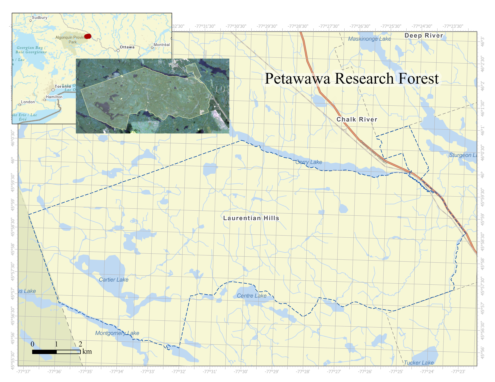
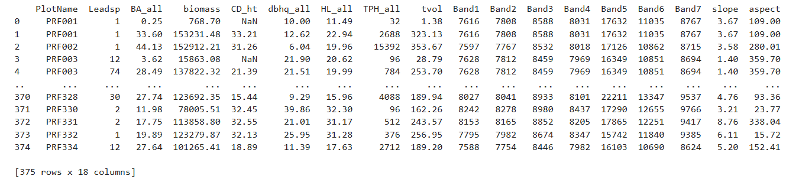

Project 3: Mapping Tree Species Across the Petawawa Research Forest Using LiDAR for Forest Inventories
Project Author: Zijin Xiao, Kate McIntyre, Nathan Mital, Abdiqafar Mohamed,
Background & Motivation
This project models dominant tree species across the Petawawa Research Forest (PRF) using Multi-spectral remote sensing imagery, Airborne Laser Scanning (ALS) data and Python-based analytical tools.
Traditionally, the identification of species relies on the multi-spectral remote sensing imagery. Predicting dominant species from ALS alone remains challenging because ALS sensors generally record a single laser wavelength. However, recent studies indicate that canopy structure and vertical profile metrics derived from ALS point clouds can support effective species discrimination. Michałowska and Rapiński (2021) provide a comprehensive assessment of ALS-based classification methods, noting that classifiers such as Random Forest, Support Vector Machine, and neural networks can achieve accuracies between 70% and over 90%. Similarly, features such as height percentiles, canopy structural indices, and intensity metrics have shown strong discriminatory capability (Fassnacht et al., 2016). This paper primarily explores the potential and feasibility of LiDAR data for species classification.
Major Questions to Solve
Can airborne LiDAR (ALS) data be used to accurately predict dominant tree species at the stand level in the Petawawa Research Forest?
Is LiDAR data alone sufficient for species classification, or would adding multispectral data improve model performance?
Data + Study Site Summary
Study Site Summary:
The PRF, located in Ontario near the Quebec border about 200 km northwest of Ottawa, offers an ideal test environment (Figure 1). Established in 1918, it is Canada’s oldest continuously operated research forest and spans roughly 100 km² within the Great Lakes–St. Lawrence mixedwood region (White et al., 2020). Its long-term ecological monitoring program includes ALS acquisitions from 2012 and 2018. Common species in the forest include white pine (Pinus strobus), red oak (Quercus rubra), trembling aspen (Populus tremuloides), white birch (Betula papyrifera), red pine (Pinus resinosa), and maple (Acer spp.).

Data Summary:
| Data Source | Metrics Breakdown | |
| LiDAR | Terrain Metrics: PRF Digital Terrain Model | Aspects; Slope |
| Stand Metrics: PRF Enhanced Forest Inventory datasets | Basal Area; Above ground Biomass; Height of Dominant Species; DBH; Stand Density; Gross Total Volume | |
| Multi-Spectral Images: | Landsat 8 | Band 2 (Blue); Band 3 (Green); Band 4 (Red); Band 5 (NIR); Band 6 (SWIR1); Band 7 (SWIR2) |
| Ground Plots: | Field Trip | Tree Species; Ground Plot Vectors |
Method:
1. Set up and Prepare Landscape Data (LiDAR/Multi-Spectral Images)
- Load and process landscape data (metrics)
2. Prepare Ground Plot Data
Load and process ground plot data (training/validation data)
Topography: extract the value by ground plot polygons from the landscape DTM data that we launched in step 1
Stand Metrics: unpack the csv to get the metrics
Multi-Spectral Landsat 8 images: extract the value by ground plot polygons from the 6 bands that we launched in step 1
3. Get the Training Data Ready
Combine all the ground plot data (topography, stand, and multispectral bands) into one composite dataframe
- This will be the dataframe we use to train our model

4. Develop a Composite Landscape Map (each layer = one metric)
- Making a composite landscape map that contains all metrics as layers
# probably need to restart the kernel for arcpy
composite_input = [basal_area, biomass, height_dominant, DBH, height,stand_density,volume] + in_rasters + in_topo
arcpy.management.CompositeBands(composite_input, r'C:\Users\zj1026.stu\OneDrive - UBC\GEM530\ProjectPresentation\Validation_presentation\composite.tif')
# Read the composite raster
with rasterio.open(r'C:\Users\zj1026.stu\OneDrive - UBC\GEM530\ProjectPresentation\Validation_presentation\composite.tif') as src:
bands = src.read() # shape: (16, rows, cols)
profile = src.profile
arcpy.CheckInExtension("Spatial")5. Model Developing
Import Random Forest Model Classifier
Reclassify the rows: if the leading species has ground plots less than 3, then assign the entire leading species group into species ID 999 (Others) to avoid errors
Define the predictor (independent variable, x) as all metrics we just defined above and the dependent variables (y) as the new leading species ID
Split the input dataframe by 7:3, so we have 70% of ground plots for training while the rest 30% are for validation.
Build up the model
Produce validation table
# the environment doesn't allow for loading both arcpy&sklearn package, so restart kernel before heading into this
from sklearn.ensemble import RandomForestClassifier
from sklearn.model_selection import train_test_split
from sklearn.metrics import classification_report
# remove the species that are so rare that the model cannot even work with.
species_count = train_valid['Leadsp'].value_counts()
rare_species = species_count[species_count < 3].index
train_valid['Leadsp_modified'] = train_valid['Leadsp'].replace(rare_species, 999)
# Predictor variables (multi-spectral bands + topography metrics + stand metrics)
x = train_valid[tree_metric].values
# Dependent variable (species, also from ground plot stand metric data)
y = train_valid['Leadsp_modified'].values
# Split into train/validation
x_train, x_val, y_train, y_val = train_test_split(x, y, test_size=0.3, random_state=42, stratify=y)
# Train the model
rf = RandomForestClassifier(n_estimators=400, random_state=42, class_weight="balanced")
rf.fit(x_train, y_train)
# Validation in Figure&Table discussion section
y_pred = rf.predict(x_val)
print(classification_report(y_val, y_pred))6. Apply the Model to the Composite Landscape Map
Modify the raster shape for the model
Apply the Model and reshape the raster back to original format
Save the output map as a categorical raster
# Reshape to [n_pixels, n_bands]
rows, cols = bands.shape[1], bands.shape[2]
stacked = bands.reshape(15, -1).T # shape: (n_pixels, 15)
# Predict species for each pixel
predicted_species = rf.predict(stacked) # model expect (n_samples, n_features)
# Reshape predictions back to raster shape
classified = predicted_species.reshape(rows, cols) #shape: (n_bands, row, col)
# Update profile for single-band classified raster
profile.update(count=1, dtype=rasterio.uint8, nodata = 0)
# Save the output
out_class = r'C:\Users\zj1026.stu\OneDrive - UBC\GEM530\ProjectPresentation\Validation_presentation\classified_species.tif'
with rasterio.open(out_class, 'w', **profile) as dst:
dst.write(classified.astype(rasterio.uint8), 1)7. Final Map & Summary Table Development
- Calculate the area to show the dominance as a dataframe
8. Output Presentation
Visualization of all tables and map!
Original training dataset
Classified map
Dominance summary table
Validation Table